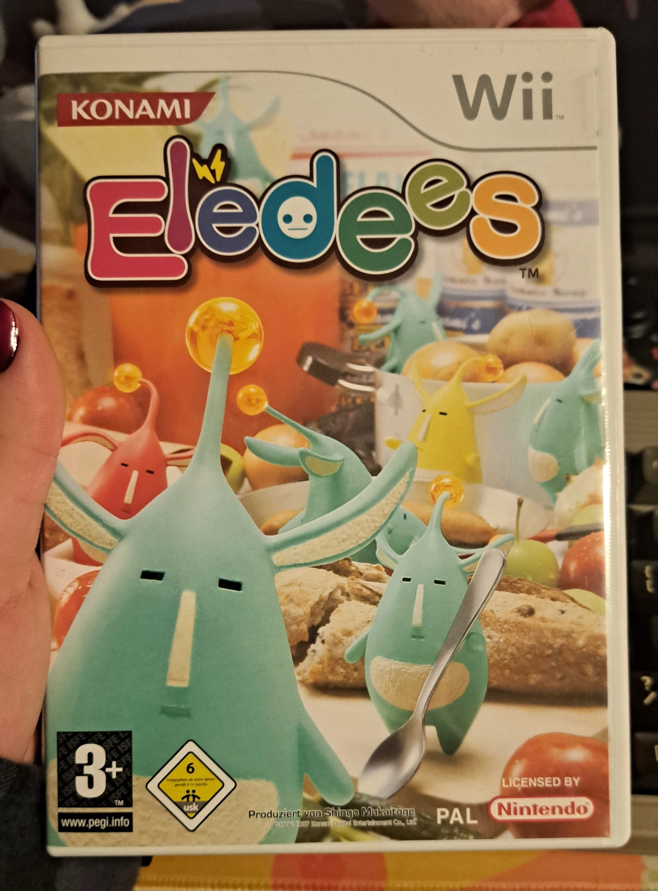
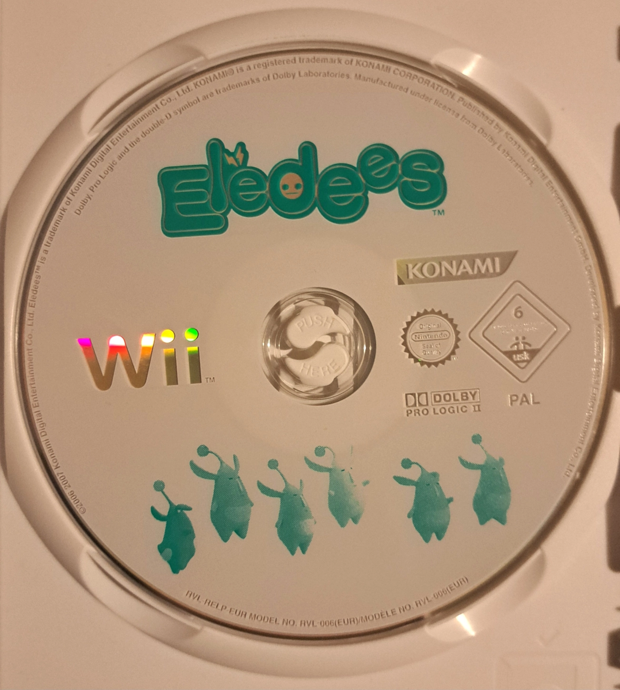

Elebits
European title: Eledees
Developed by: Konami
Published by: Nintendo
Platform: Nintendo Wii
Released in: 2006
Completed? Yes !


European Box Art featuring the (arguably better) european title.

Game disc
Elebits
European title: Eledees
Developed by: Konami
Published by: Nintendo
Platform: Nintendo Wii
Released in: 2006
Completed? Yes !
Eledees is a game i don't see many people bring up nowerdays. Which is a real shame ! It's a really fun game and for being one of the Wii's launch titles (at least in Japan) it's technologically pretty impressive, featuring an ambiguous physics engine, which did however force the Wii's hardware on it's knees at some points !
Eledees was produced by Shingo Mukaitoge, who initialy helped produce some of the Beatmania games at Konami. The absolutely amazing art style was conceived by Shigeya Suzuki, who also goes by the synonym of Akihito Tsukushi, who later on created the Made in Abyss manga series after his time at Konami !
In Eledees you play as a 10-year old boy named Kai, who's parents are famous Eledees reaserchers. Eledees are basically little creatures, which provide electricity to the world. After the Eledees suddenly vanished following a huge thunderstorm, the whole city is experiencing a blackout on a masive scale and Kai's parents leave the house to investigate the odd disapperance of the Eledees.
Your goal is it to use the Capture Gun from Kai's parents, to locate and capture the missing Eledees. The more Eledees you capture in a level, the more power you restore to your neighborhood and the stronger the Capture Gun becomes, allowing you to pick up larger and more heavier objects.
The gameplay, belive it or not, is actually quite similar to Half-Life 2 with it's Gravity Gun ! The developers stated, that Half-Life 2's Gravity Gun was a big source of inspiration during development ! So in theory you could say, that Eledees is what happens when Half-Life 2 and Katamari Damacy have a baby, both being games i absolutely adore !
One thing that has stuck with me ever since i've first layed eyes on this game, aside from it's art style, was its soundtrack ! The soundtrack is something that when you hear it for the very first time, will probably get stuck in your head for quite a while ! I'd really recommend checking out a playlist of the game's soundtrack, because this game really has some hidden gems, some of my personal favorites being the Multiplayer Node Theme and the Tutorial Theme !
Random Funfact !: This game is one of few Wii titles, which is forced into 4:3 aspect ratio when played on the Wii U's vWii, even though this game supports 16:9 just fine !
As mentioned earlier however, this game does have quite a few performance issues, due to its very ambiguous physics engine, given the fact that the Wii's hardware is basically on the level of an overclocked GameCube. Despite that however, if you still have your Wii, i think this game is definitely worth giving a shot !